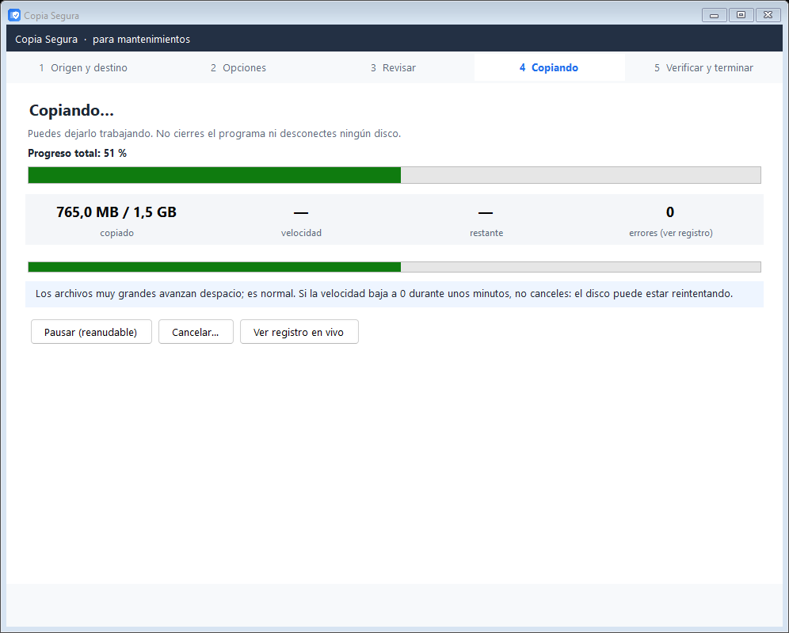
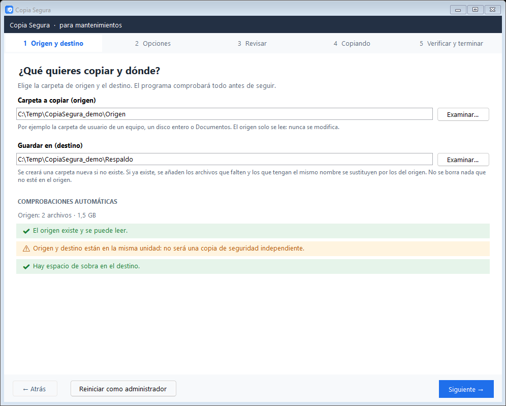
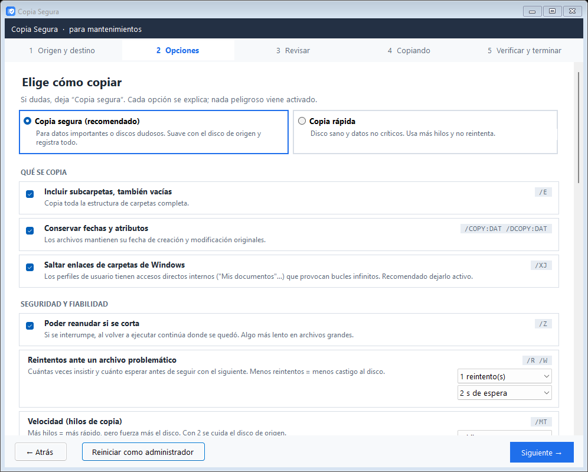
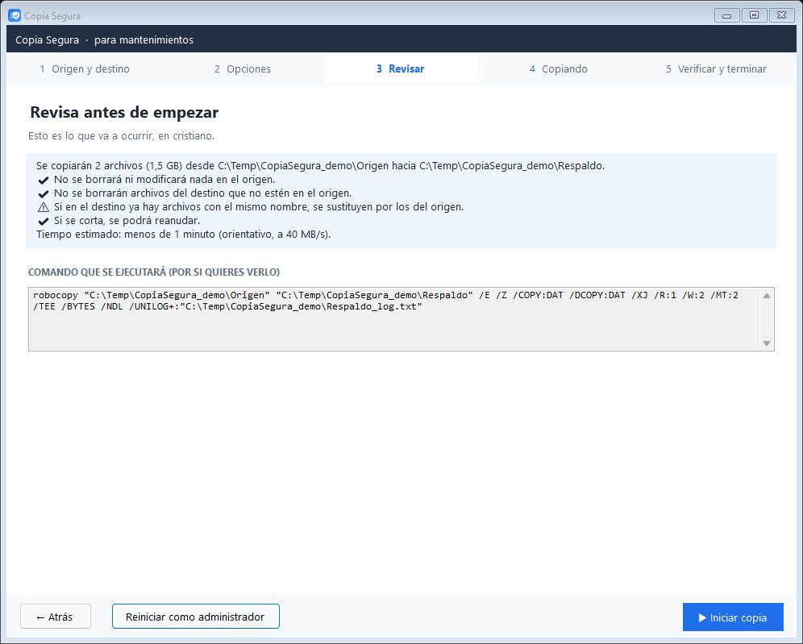
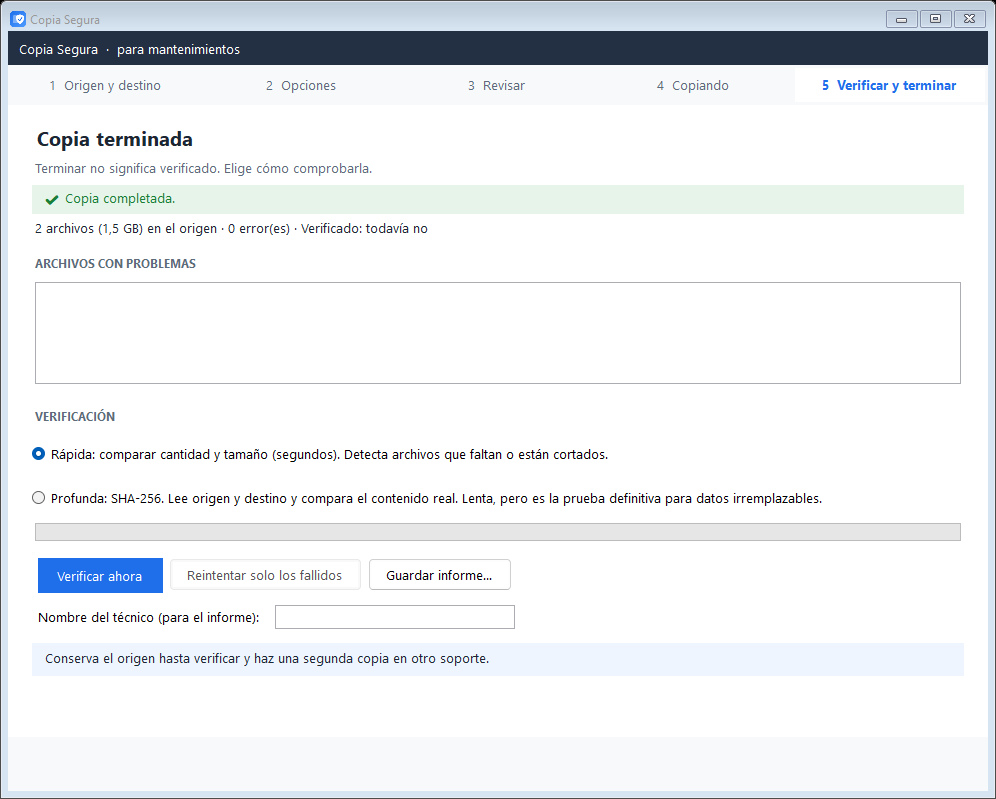

Copias de carpetas sin sustos
Copia una carpeta de un equipo a un disco externo con Robocopy, paso a paso, con cada opción explicada y verificación al final. Portable: no se instala.

Pensado para no perder datos
Hecho para mantenimientos y migraciones, donde la copia que haces puede ser la única que existe.
El origen no se toca
Solo se lee. Las opciones que pueden borrar (espejo, mover) están bloqueadas hasta que escribes «BORRAR».
Cada opción, explicada
Nada de memorizar parámetros: cada ajuste dice en español qué hace y cuál conviene en cada caso.
Verificación real
Comparación rápida o prueba definitiva con SHA-256. «Terminada» nunca se confunde con «verificada».
Portable de verdad
Un par de archivos que caben en un pendrive. No instala nada ni toca el registro del equipo del cliente.
Informe para el cliente
Opcional: un documento con equipo, fechas, resultado y verificación, listo para imprimir o guardar como PDF.
Desde Windows 7
Funciona en Windows 7 SP1, 10 y 11 usando el Robocopy que ya trae el sistema.
Cinco pasos, sin complicaciones
Un asistente te lleva de la mano. Así se ve el programa real.
Elige origen y destino
El programa comprueba que existan, que quepa la copia y que el destino no esté dentro del origen.

Escoge cómo copiar
«Copia segura» por defecto, «Copia rápida» o modo disco dudoso. Cada opción trae su explicación.

Revisa y empieza
Un resumen en lenguaje llano y el comando exacto que se va a ejecutar, por si quieres verlo.

Sigue el progreso
Progreso total y por archivo, velocidad y tiempo restante. Puedes pausar, reanudar o cancelar.
Verifica y entrega
Comprueba la copia, reintenta solo lo que falló y guarda el informe si lo necesitas.

Descárgalo, descomprime y listo
Un zip pequeño con el programa y sus instrucciones. Sin instalador, sin cuentas, sin datos enviados a ningún sitio.
Descargar CopiaSegura.zip · 57 KBSHA-256: 98b7208416066ca421b868933126cebcff5aff62c8a2f03037482b212f3f82c8
Antes de ejecutarlo
- El programa no está firmado digitalmente, así que Windows puede mostrar el aviso SmartScreen: pulsa «Más información» y «Ejecutar de todas formas». Si quieres asegurarte de que es el original, compara la huella SHA-256 de arriba.
- Si Windows marca el zip como descargado de Internet, usa clic derecho › Propiedades › «Desbloquear» antes de descomprimir.
- Deja
CopiaSegura.exeyCopiaSegura.exe.configen la misma carpeta. - Windows XP no está soportado.